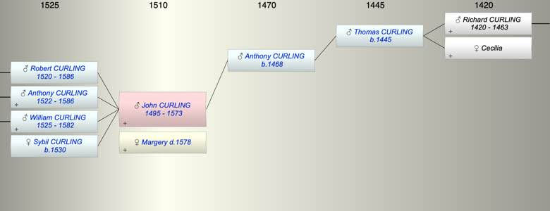

| [Index] |
| John CURLING (1495 - 1573) |
|  |
| b. abt 1495 |
| +. Margery ( - 1578) |
| d. 1573 at St Laurence aged 78 |
| Parents: |
| Anthony CURLING (1468 - ) |
| Siblings (3): |
| Robert CURLING (1490 - 1542) |
| Anthony CURLING (1495 - 1564) |
| Nicholas CURLING (1498 - 1567) |
| Children (4): |
| Robert CURLING (1520 - 1586) |
| Anthony CURLING (1522 - 1586) |
| William CURLING (1525 - 1582) |
| Sybil CURLING (1530 - ) |
| Events in John CURLING (1495 - 1573)'s life | |||||
| Date | Age | Event | Place | Notes | Src |
| abt 1495 | John CURLING was born | ||||
| abt 1520 | 25 | Birth of son Robert CURLING | St Laurence | ||
| abt 1522 | 27 | Birth of son Anthony CURLING | St Laurence | ||
| abt 1525 | 30 | Birth of son William CURLING | |||
| abt 1530 | 35 | Birth of daughter Sybil CURLING | |||
| 1573 | 78 | John CURLING died | St Laurence | not found | |
| Personal Notes: |
|
John Curling the elder of Hereson in St Lawrence, will dated 29 May 1573 proved 8 Jan 1573/4. PRC17/41/339 PRC16/61 C/2 [A41/339].
Margery was to inherit a house at Herson. He left tenements at Herson to his son Robert, also one at Dumpton, parish of SP, where Robert was living, his tenements at Norwood to his son Anthony where Anthony was living, and a tenement at Dumpton to his son William where William was living. He appointed his three sons executors. John was overseer of the will of his brother Robert 1542, and was in remainder to property devised by Robert to his son Robert. Margaret Bolton found: John Curling 1573, yeoman wife Margery sons Robert, William, Anthony son Robert had daughter Sybil and sons Roger and William son William had sons Roger, Gregory and William Robert got 40a Hereson plus some at Dumpton William got land at Dumpton bought from Richard Curling of St Lawrence son Anthony got house at Northwood MB comment This is the will of Gregory of Chilton’s grandfather. Note it does not reference him holding any land at Chilton and specifically says he lived at Northwood - which was evidently never part of the Chilton estate. |
| Created on a Mac™ using iFamily for Mac™ on 8 Oct 2023 |